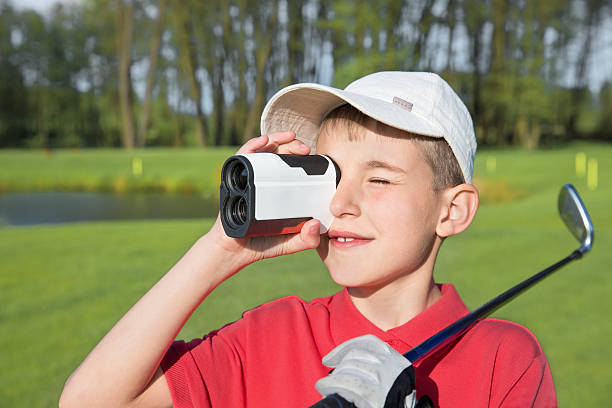
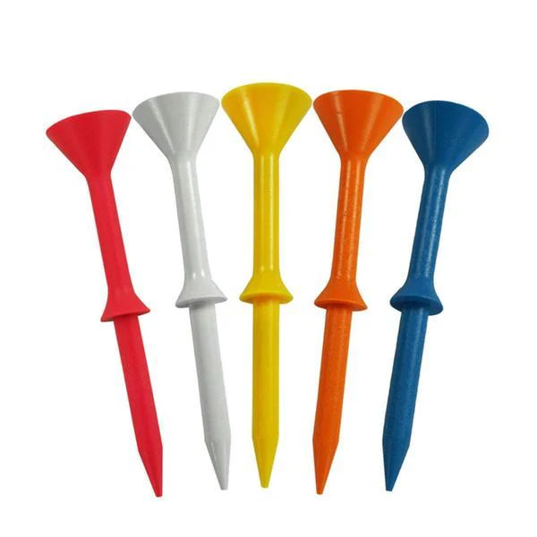
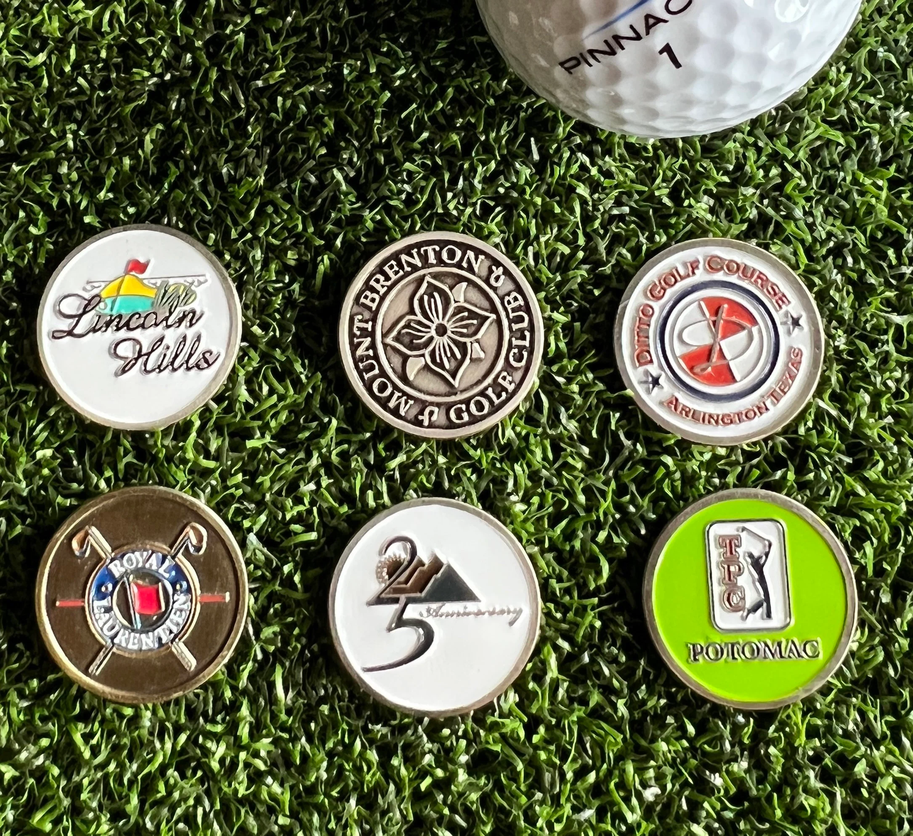
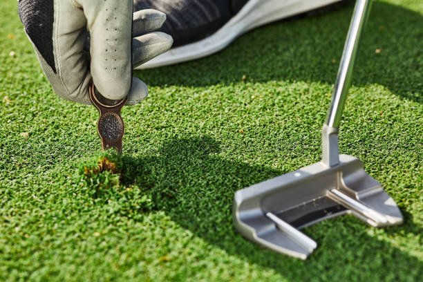
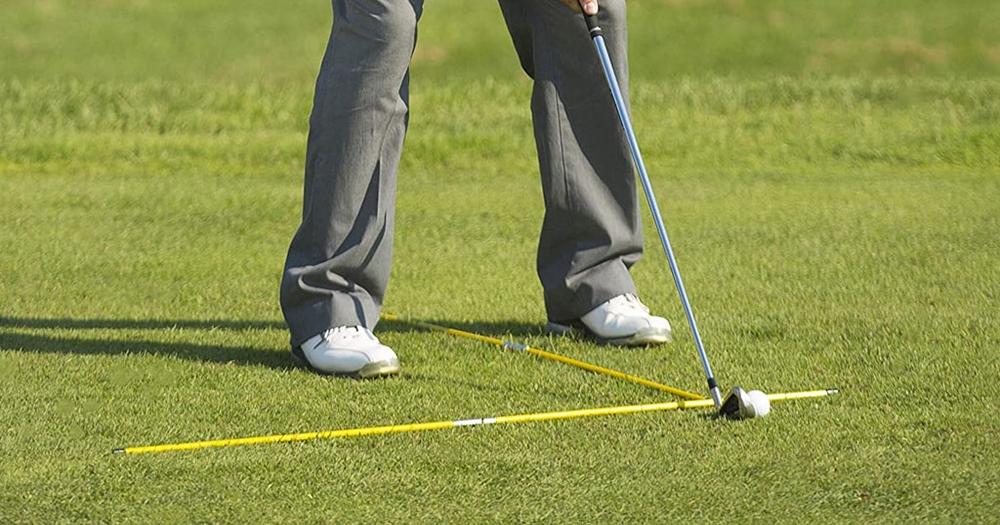
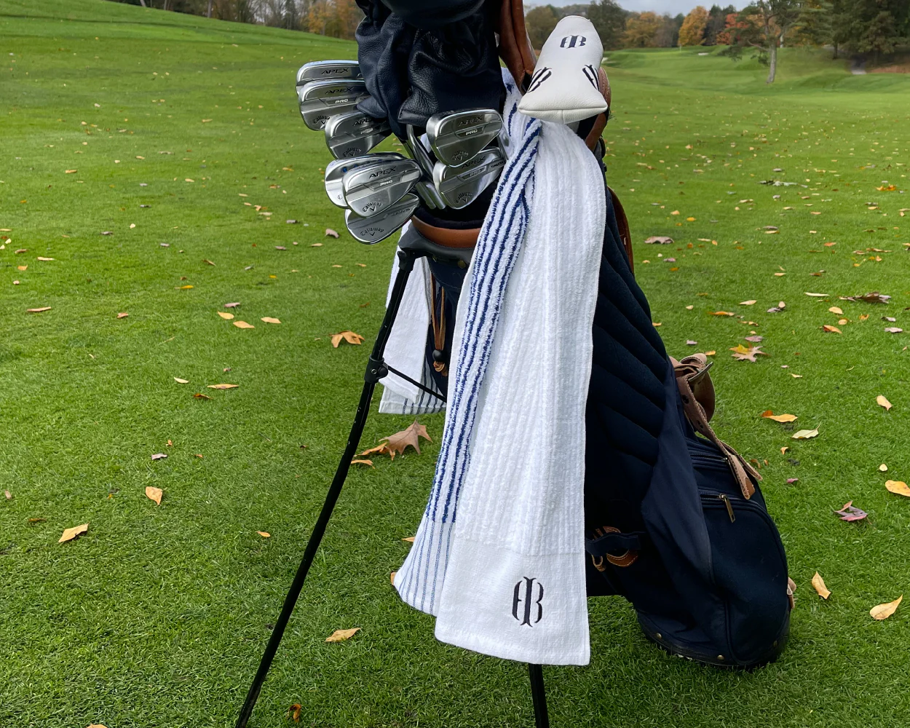
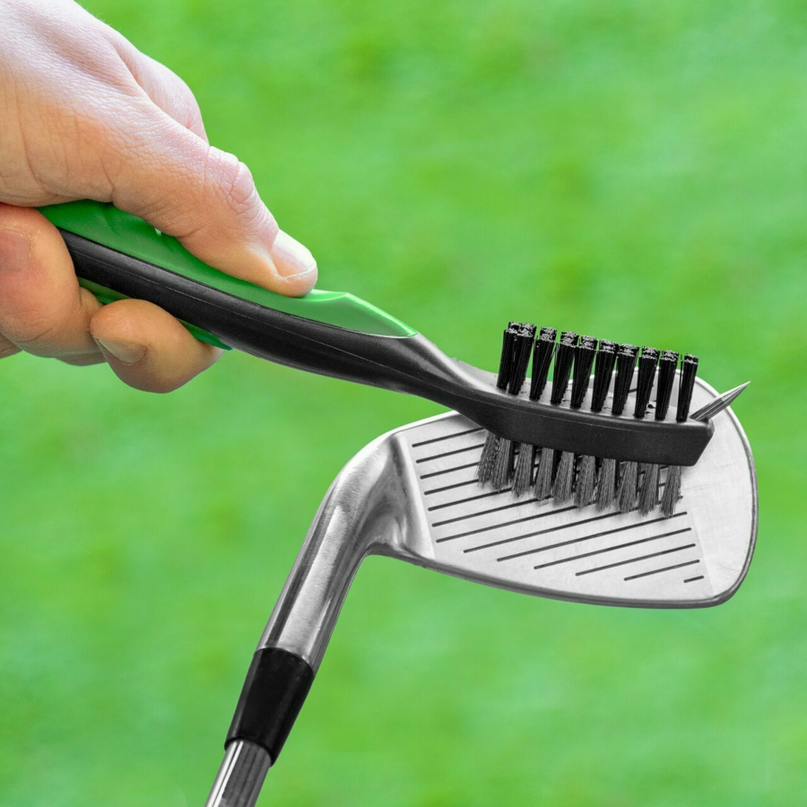

Range Finder
A rangfinder is a tool used for measuring the distance, and in some cases the slop, between your golf ball and the pin, front, and back of the green. This makes them very helpful when deciding what club you want to hit. They are incredibly useful to an average player who has no way to measure distances, and are even more useful to scratch golfers who can use all the information to their advantage.

Martini Golf Tees
I will forever swear by these tees. A pack of four of them costs maybe five dollars, they are nearly unbreakable, and they give you a consistent height to hit your tee shots with. I have been using these for years, and I am still on the same pack of four I purchased.

Ball Marker
A ball marker is a simple item that is used to mark your ball when you are on the green. This is so if you are in a group and you guys are putting, you can mark where your ball is and pick it up so you don't affect your groups putts. I like them specifically becuase they are customizable and come with different designs as well.

Divot Tool
A divot tool is necessary in every golfers bag, as fixing the divots on the green is a big part of golf ettequite. These also come with different designs and are very customizable.

Alignment Stick
An alignment stick is a training aid that you can use to help your stance and swing path, as well as other things. There are dozens of different positions you can put it in to help with specific motions. They are cheap and effective, and there's a lot of videos out there with them showing different drills.

Golf Towel
This is a very basic item, but very necessary. If your clubs/balls are dirty or wet, you can use your handy golf towel to clean them off. You can get these in different sizes and designs and also have them ebroidered.

Club Cleaning Brush
This is a small quality of life item, but they are very helpful for cleaning the grooves in your clubs to make sure the ball is coming off properly. These are pretty hand as they can hang off your bag and help keep your clubs nice and clean.